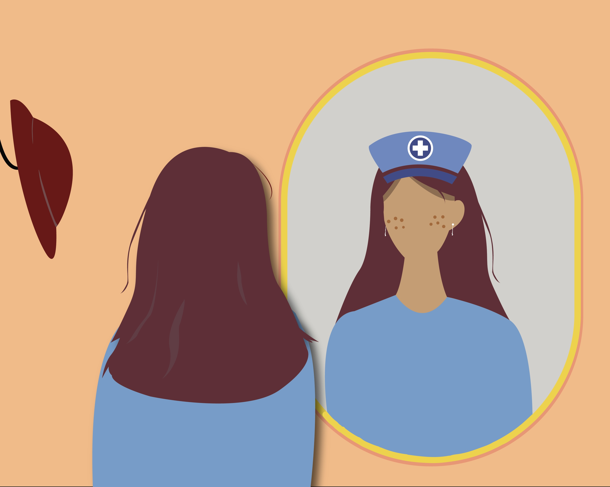
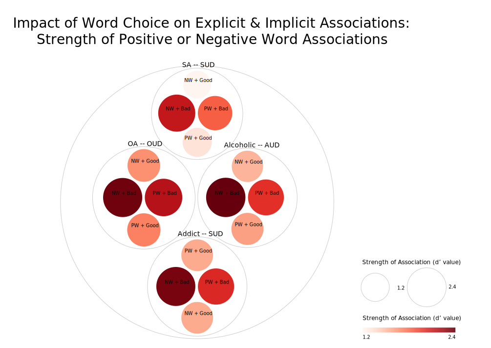

Treatment Magazine Data Visualizations

Accessible data regarding stigma or quantifying its impact is difficult to come by, and primarily resides in the annals of journal articles. Visualizations provide context and meaning, and are essential visual tools for communicating information. Knowing this, I sifted through tens of papers and datasets to find a couple suited for visualizations related to topics I covered in my column with Treatment Magazine. I learned how to interpret data, took Frederica Fragapane's course with a Skillshare free trial (she's awesome!!), and got to work. I plan to pick up where I left off and hone new skills in programming in the process.
Skills
- data analysis
- RAWgraphs
- ai2html
- Datawrapper
- Adobe Illustrator
- database searching
Visualizations
